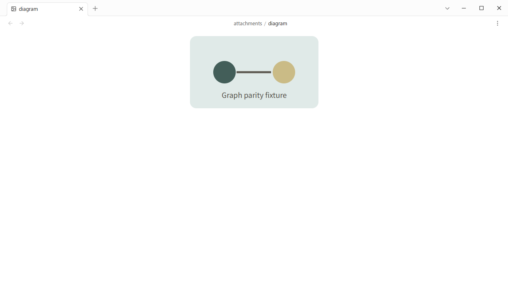
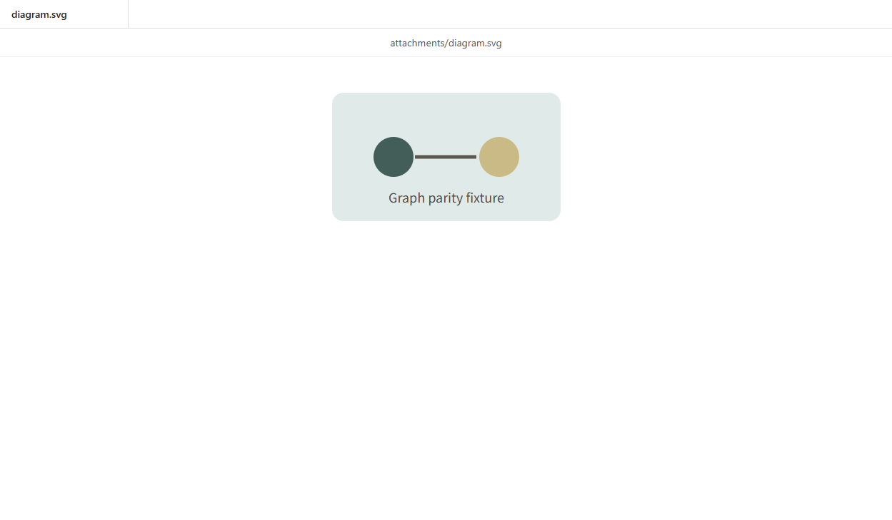

GP0-3b-i · 固定公開UI比較
添付を別窓へ開き、元グラフはそのまま残す。
Obsidian Desktop 1.13.4とTSUZUNEを同じfixture、Global Graph、1265×768、DPR 1、ライトテーマで比較しました。
matched: 添付ノードの新規ウィンドウ動作
操作結果


比較
| 確認項目 | Obsidian | TSUZUNE | 判定 |
|---|---|---|---|
| 右クリック「新規ウィンドウで開く」でトップレベルウィンドウを生成 | true | true | matched |
| SVGを外部アプリへ渡さず内部画像ビューで表示 | image | internal image preview | matched |
| 元Global Graphを開いたまま保持 | true | true | matched |
| 操作後にcontext menuを閉じる | true | true | matched |
| 添付ノードの右クリックメニュー項目数 | 11 | 3 | known-gap-outside-slice |
| 独立ウィンドウのタブ・パス・余白の視覚一致 | Obsidian workspace shell | minimal TSUZUNE attachment shell | known-gap-outside-slice |
公開操作と状態遷移は一致しました。独立ウィンドウの細かなworkspace装飾とcontext menu全体は、後続sliceの公開差です。